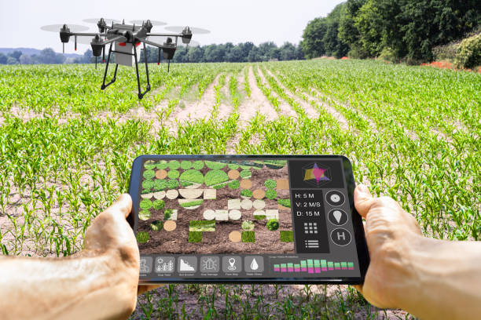
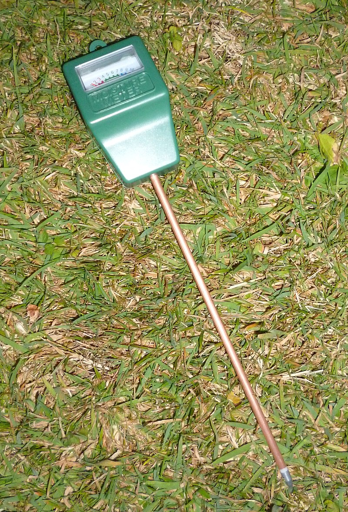

Precision Farming
(अचूक शेती)
;प्रेसिझन फार्मिंग ही एक तंत्रज्ञानिक व प्रौद्योगिकी आहे ज्यामागे कृषीच्या प्रत्येक प्रक्रियेला विशेष धोरणेत व सुसंगतीने केलेले आहे.
यामध्ये उच्च नमून आणि विशेष तंत्रज्ञानिक डेटा वापरले जाते ज्याच्यामाध्ये भूमीच्या प्रकृतीच्या वैशिष्ट्ये, वर्तमान आणि भविष्यातील आकडेवारी, जलवायू आणि अन्य कृषीसंबंधित परिस्थितींचा विश्लेषण आणि व्याख्यान करण्यासाठी सुसंगत तंत्रज्ञानिक प्रणाली वापरली जाते.
प्रेसिझन फार्मिंगमध्ये उच्च स्तरीय संग्रहण व्यवस्था, उद्भवनी व्यवस्था, विश्लेषण, आणि कृषीसंबंधित निर्णय देणारे तंत्रज्ञानिक प्रणाली वापरले जाते ज्यामागे कृषीसंबंधित निर्णय घेण्याची स्पष्टता वाढते आणि उत्पन्न नुकसान कमी करते..
vertical farming
(उभी शेती)
 ;
;
वर्टिकल फार्मिंग हे एक प्रौद्योगिकी आहे ज्यामध्ये वनस्पतींचा उत्पादन आणि पालन किंवा वनस्पतींच्या वाढीसाठी आवश्यक अवजारची जागा कमी असल्याने, इमारतीच्या भीतर उच्चतम संभाव्य प्रदूषण वाढविणार्या वस्तींच्या भीतर वनस्पती क्षेत्रांची व्यवस्था करण्यासाठी वापरली जाते.
या प्रक्रियेमध्ये जमीनवर वनस्पतींचे उत्पादन करण्याच्या व्यवस्थेमध्ये जागा कमी असल्याने, वनस्पतींच्या वाढीसाठी वापरणारे पाणी कमी लागतो आणि रसायनाची वापरणारी कमी असलेली वनस्पतींची व्यवस्था करण्यात यशस्वी होतात.
वर्टिकल फार्मिंगच्या उद्दिष्टप्रद असलेल्या उत्पादनाचा वापर कमी जागेवर अनेक वर्षांपूर्वी आहे आणि हे आपल्याला अधिक वनस्पती उत्पादन करण्याची संधी देते.
Soil Moisture Censor
(ओलावा सेंसर)
;
माती दव/आद्रता सेंसर: हा एक उपकरण आहे ज्याने आपल्या शेतातील मातीच्या दाव/आद्रता स्तराची नियंत्रित करण्यात मदत करतो.
हे सेंसर वर्षार्ध्यातील अनुभवी कृषीकर्मीला मातीतील दाव/आद्रता स्तराची समीक्षा करण्यात मदत करतो.
त्याने आपल्या कृषीकर्मीला त्याच्या शेतातील नमीच्या स्तराच्या विषयी माहिती देते आणि त्याला उचित निर्णय घेण्यात मदत करते.
हे संसोर वापरून कृषीकर्मी शेतातील दाव/आद्रता स्तराची नियंत्रण करू शकतो ज्यामुळे पाण्याची वापर कमी होते आणि शेतीतील वनस्पतींचे उत्पादन वाढते.